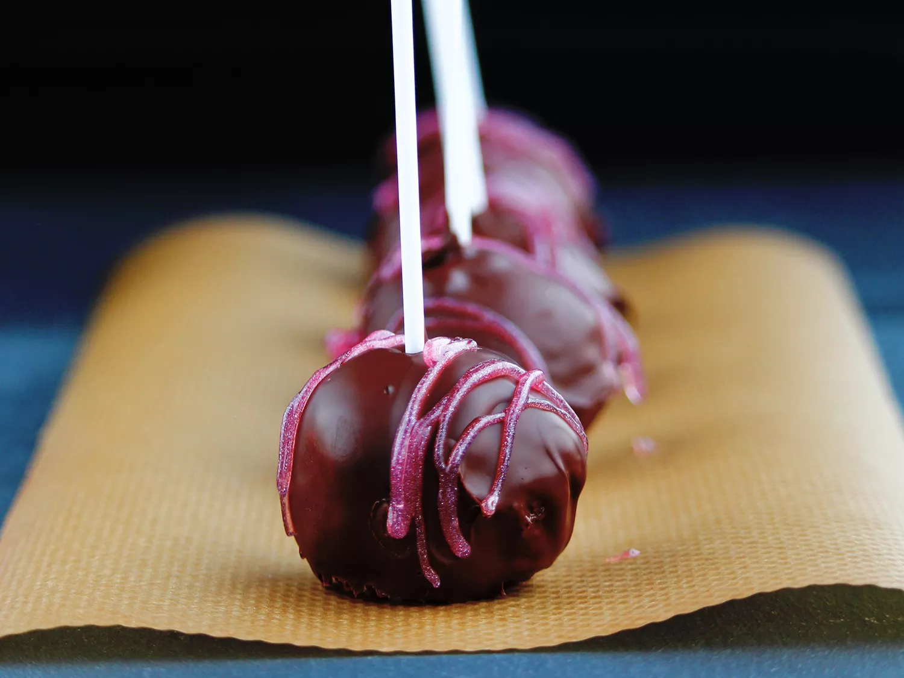

Cake Pops

Description:
A cake pop is a form of cake styled as a lollipop. Cake crumbs are mixed with icing or chocolate, and formed into small spheres or cubes in the same way as cake balls, before being given a coating of icing. chocolate, or other decorations and attached to lollipop sticks.
By following this simple recipe, you will learn how to make delicious cake pops at home with inexpensive ingredients. A fun snack for yourself, your children, and even house guests!
Ingredients:
- 1 (15.25 ounce) package of yellow cake mix
- 1 cup of water
- 3 eggs
- 1/2 cup of vegetable oil
- 1 (8 ounce) package of cream cheese, softened
- lollipop sticks
- 1 (14 ounce) bag of chocolate confectioners' coating
Steps:
- Preheat oven to 350 degrees F (175 degrees C). Grease a 9x13 inch baking dish.
- Beat cake mix, water, eggs, and vegetable oil together in a bowl using an electric mixer on low speed for 30 seconds; increase speed to medium and beat until batter is smooth, about 2 minutes more. Pour batter into the prepared baking dish.
- Crumble cake into a large bowl and mix in cream cheese. Roll cake mixture into about 40 to 50 quarter-size balls. Insert a lollipop stick into each cake ball and arrange on a baking sheet; refrigerate until chilled, at least 30 minutes.
- Melt chocolate in a microwave-safe glass or ceramic bowl in 15-second intervals, stirring after each melting, 1 to 3 minutes.
- Dip each cake ball into melted chocolate until coated. Arrange cake pops on a baking sheet to dry.